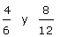

Tipos de fracciones
Tipos de fracciones
Fracciones propias
Las fracciones propias son aquellas cuyo numerador es menor que el denominador. Su valor está comprendido entre cero y uno.
Fracciones impropias
Las fracciones impropias son aquellas cuyo numerador es mayor que el denominador. Su valor es mayor que 1.
Número mixto
El número mixto o fracción mixta está compuesto de una parte entera y otra fraccionaria.
Para pasar de número mixto a fracción impropia:
1 Se deja el mismo denominador
2 El numerador se obtiene de la suma del producto del entero por el denominador más el numerador, del número mixto.
Para pasar una fracción impropia a número mixto:
1 Se divide el numerador por el denominador.
2 El cociente es el entero del número mixto.
3 El resto es el numerador de la fracción.
4 El denominador es el mismo que el de la fracción impropia.
Fracciones decimales
Las fracciones decimales tienen como denominador una potencia de 10.
Fracciones equivalentes
Dos fracciones son equivalentes cuando el producto de extremos es igual al producto de medios.
a y d son los extremos
b y c son los medios
Calcula si son equivalentes las fracciones :
4 · 12 = 6 · 8  48 = 48 SÍ
48 = 48 SÍ
2/3 - 4/12
Si se multiplica o divide el numerador y denominador de una fracción por un número entero, distinto de cero, se obtiene otra fracción equivalente a la dada.
Al primer caso le llamamos ampliar o amplificar.
Simplificar fracciones
Simplificar una fracción es transformarla en una fracción equivalente más simple.
1 Para simplificar una fracción dividimos numerador y denominador por un mismo número.
2 Empezaremos a simplificar probando por los primeros números primos: 2, 3, 5, 7, ... Es decir, probamos a dividir numerador y denominador entre 2 mientras se pueda, después pasamos al 3 y así sucesivamente.
3 Se repite el proceso hasta que no haya más divisores comunes.
4 Si los términos de la fracción terminan en ceros, empezaremos quitando los ceros comunes finales del numerador y denominador, ¥ lo cual es equivalente a dividir numerador y denominador por la misma potencia de 10.
5 Si el número por el que dividimos es el máximo común divisor del numerador y denominador llegamos a una fracción irreducible.
Fracciones irreducibles
Las fracciones irreducibles son aquellas que no se pueden simplificar, esto sucede cuando el numerador y el denominador son primos entre sí, ¥o lo que es lo mismo, cuando el mcd de ambos números es 1.